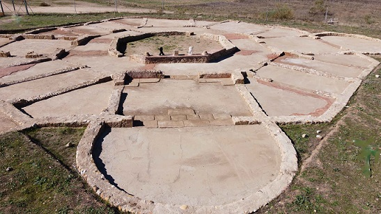
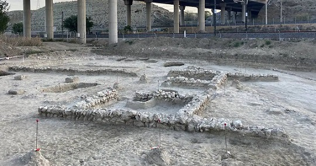

|
MADRID ROMANO
- - En Villalba en el cerro de San Juan del Viso, se han hallado los restos de lo que fue una importante ciudad del Imperio Romano. A través de una fotografía aérea los arqueólogos supieron que bajo la tierra había una ciudad de al menos 35 hectáreas que se fundó con una clara misión defensiva, con sus domus, termas, templos y hasta un teatro. Las campañas de excavación empezaron en el año 2017, y ya sabemos que las primeras construcciones datan del siglo I a.e.c. Según las últimas investigaciones, este hallazgo podría ser el origen primitivo de la actual ciudad Alcalá de Henares, ya que hay cierta relación entre las excavaciones de Villalbilla y Complutum. - En Alcalá de Henares, Complutum. - - En Cercedilla se han hallado restos de una calzada y puentes romanos. La calzada comunicaba Segovia con Titulcia. Se conservan tramos en buenas condiciones. Durante el recorrido que empieza en las Dehesas y termina en el Puerto de la Fuenfría, podrá admirar tres de los cuatro puentes romanos existentes: Puente de la Venta, Puente del Descalzo, y Puente de En medio. El puente del Molino o del Reajo se encuentra en las inmediaciones de la estación de Renfe. - - La calzada de las Machotas, o la calzada romana de Zarzalejos. Mojones y tramos enlosados salpican el camino, que arranca en Pajares y se prolonga por espacio de cinco kilómetros hasta El Escorial.
- - En
Carabanchel, con la obras de la M-30 aparecieron los vestigios de un poblado
romano, bajo un amplio trecho excavado que atraviesa el parque de Eugenia de
Montijo. En el siglo XIX, varios historiadores situaron en la misma zona la
villa de Miaccum, origen romano de Madrid. - - En Arroyomolinos se halló un doble mausoleo romano del siglo IV. Contiene restos humanos de siete cadáveres, y dos sarcófagos de plomo, atravesados por maderos, que permanecen aún sin abrir bajo una bóveda. Presumiblemente, uno de ellos perteneció al paterfamilias, habitante de una villa romana próxima. También han aparecido dos pilares de un atrio contiguo a los sepulcros, más una trama aldeana próxima a los mausoleos. - En Getafe habitado desde época prehistórica. De época romana destacan los restos de la villa romana de La Torrecilla datada en el siglo II y de la finca denominada Torre de Iván Crispín. - La calzada romana de Galapagar, construida entre el
213 y el 217, era la denominada Vía Antonina y unía Mérida con Zaragoza,
pasando por Segovia, Galapagar desde el Puente del Herreño hasta el Puente del
Toril, Titulcia, y Alcalá de Henares. Todavía se conservan los mojones en la
vía conservados en el valle de la Fuenfría, uno de ellos localizado en la
Plaza del Ayuntamiento de Galapagar. - El yacimiento de Miralrío en Rivas-Vaciamadrid, contiene restos de un
poblado de la II Edad del Hierro, datado entre los siglos IV y II a.e.c, y que
constituye uno de los pocos vestigios conservados y que se pueden visitar del
pueblo carpetano. Se conservan los restos arqueológicos de una vivienda
carpetana. Estaba destinada a ser un espacio tanto doméstico como de
producción artesanal.
 - Yacimiento carpetano-romano de Titulcia. Destaca la ‘Medusa de Titulcia’.
Pátera (plato ceremonial de la Antigüedad) realizada en plata y oro, y que
muestra la cabeza de un felino adornada con serpientes, perteneció a la tribu
prerromana de los carpetanos, que la debió de emplear en sus ritos. Se trata
de una pieza única en España. La pieza se encontró en el yacimiento
arqueológico de El Cerrón. Se encontraba en el interior de un edificio,
probablemente un templo, en una pequeña fosa excavada en el subsuelo y sellada
por un pavimento de adobes, lo que parece indicar que podría formar parte del
rito fundacional de la construcción y sacralización de este espacio. - En Pozuelo de Alarcón, en noviembre de 2019, se hallan los restos de un campamento romano en Somosaguas. Los restos pertenecen a los siglos I y II y se encontraban en las instalaciones de la Complutense. - En abril de 2023, hallan tumbas de la Edad de Bronce y un edificio romano durante las obras del AVE en las terrazas del Manzanares. Los restos encontrados al sur de la Comunidad de Madrid datan del 3000 a.e.c. a la Guerra Civil e incluyen huesos, flechas y cuencos. Restos del edificio y camino romanos hallados durante las obras del AVE en las terrazas del Manzanares. Foto Arqueoestudio S. COOP.

|